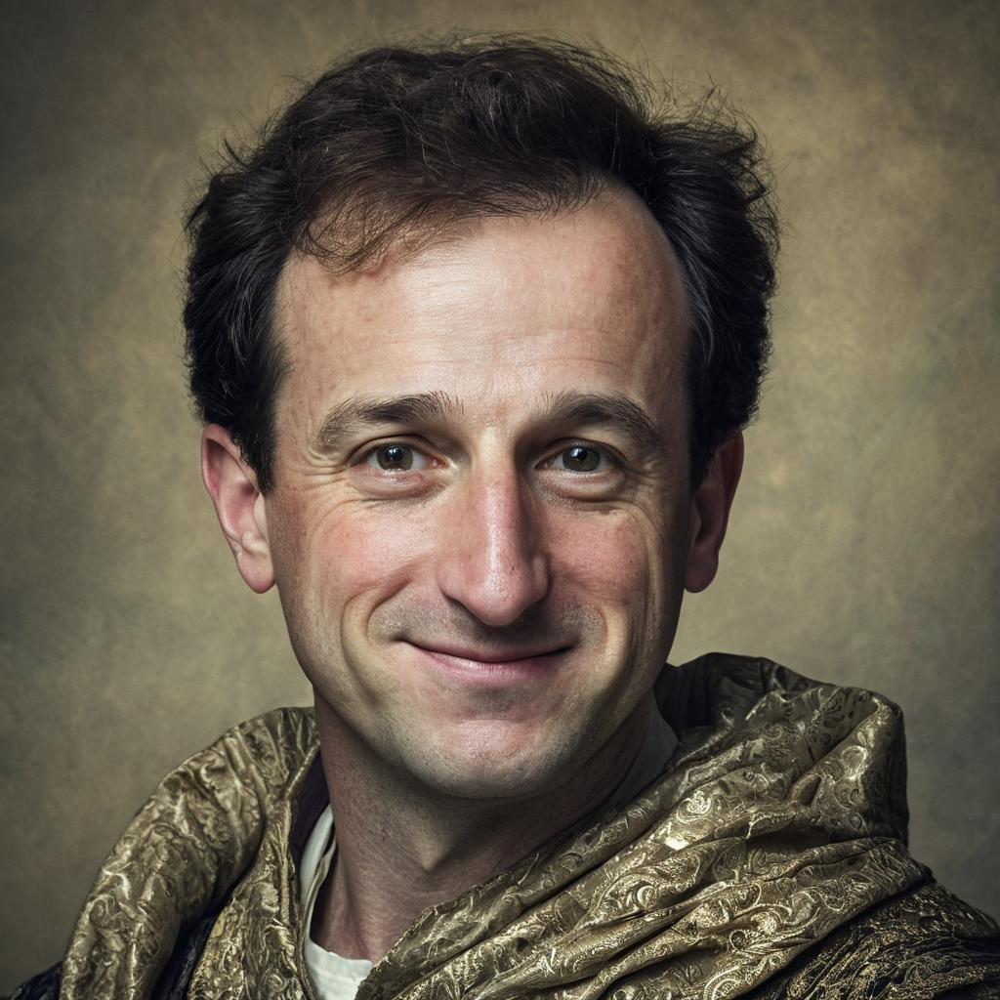

I am trained as a civil engineer, specifically a geotechnical engineer, and more specifically as an offshore geotechnical engineer. I recently completed my postgraduate studies at The University of Western Australia in Perth. Before that I lived in the United States where I was born and raised.